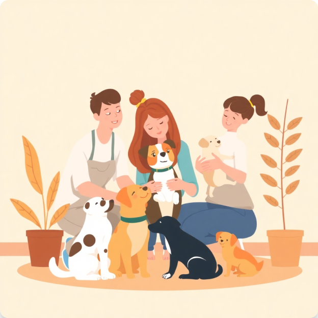

Seja um Colaborador PataCerta
Junte-se a nós na missão de encontrar lares amorosos para pets abandonados. Faça parte dessa rede de proteção animal.
Quero ser ColaboradorPor que ser um colaborador?

Impacto Social
Ajude a transformar a vida de animais abandonados, conectando-se com famílias amorosas.
Rede de Apoio
Faça parte de uma comunidade engajada e comprometida com a causa animal.
Visibilidade
Amplie o alcance do seu trabalho através de nossa plataforma moderna.
Como se tornar um Colaborador
1
Cadastro
Preencha o formulário com seus dados e informações da ONG
2
Documentação
Envie os documentos necessários para verificação
3
Análise
Nossa equipe avaliará seu cadastro e documentação
4
Aprovação
Após aprovado, você já pode começar a usar a plataforma
Pronto para começar?
Junte-se a centenas de ONGs e protetores que já fazem parte da nossa rede
Iniciar Cadastro